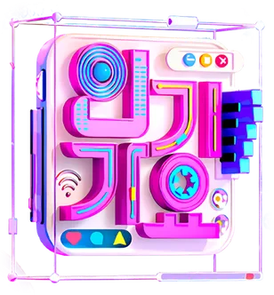
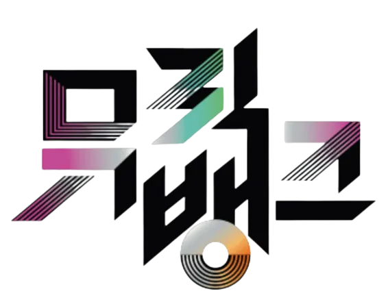
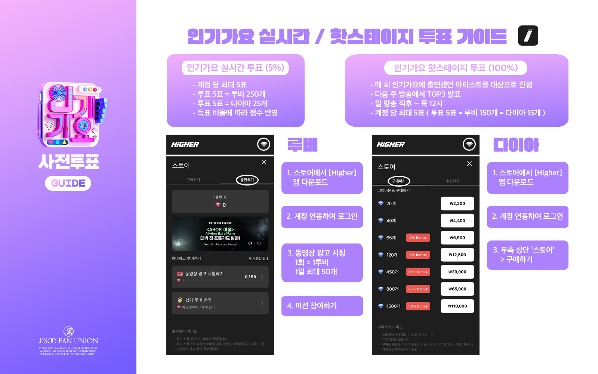
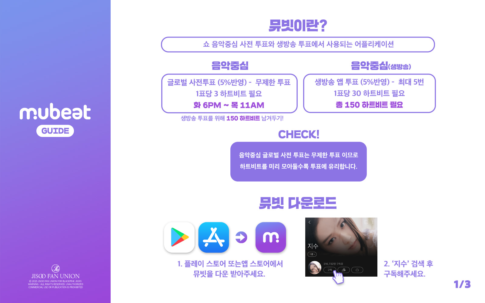
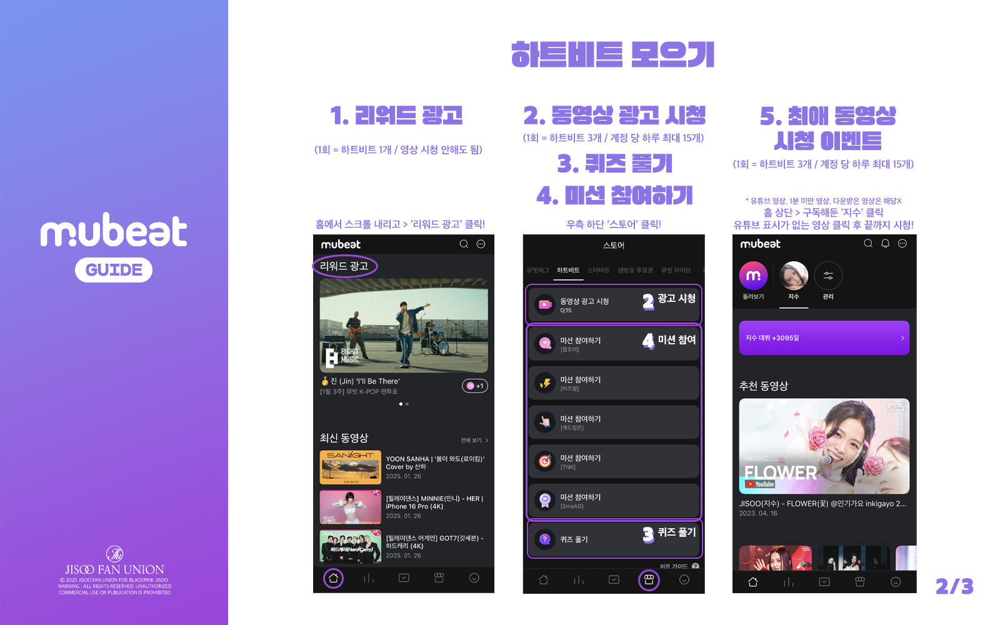
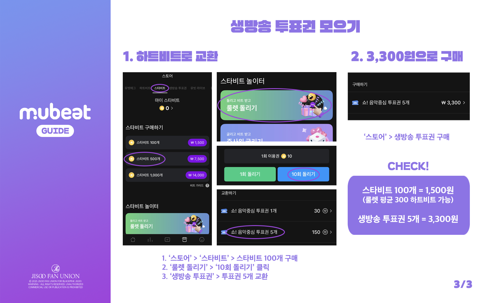
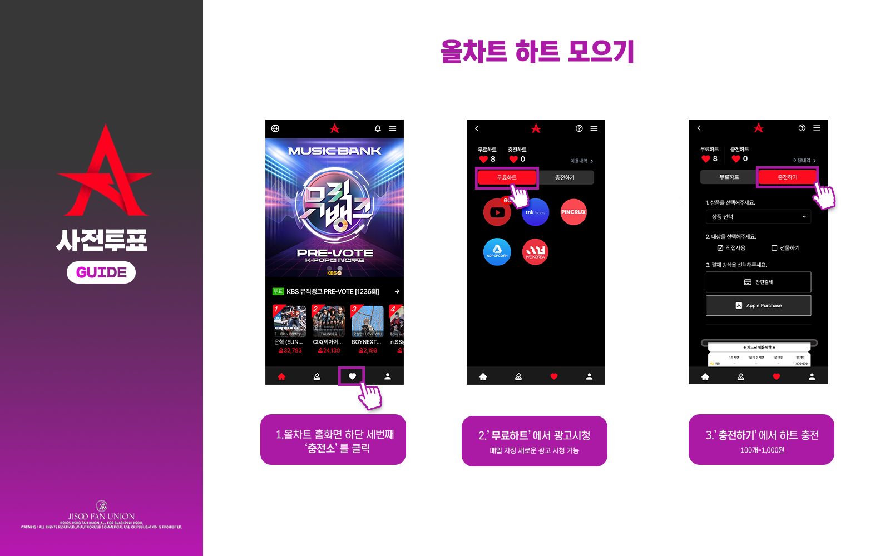
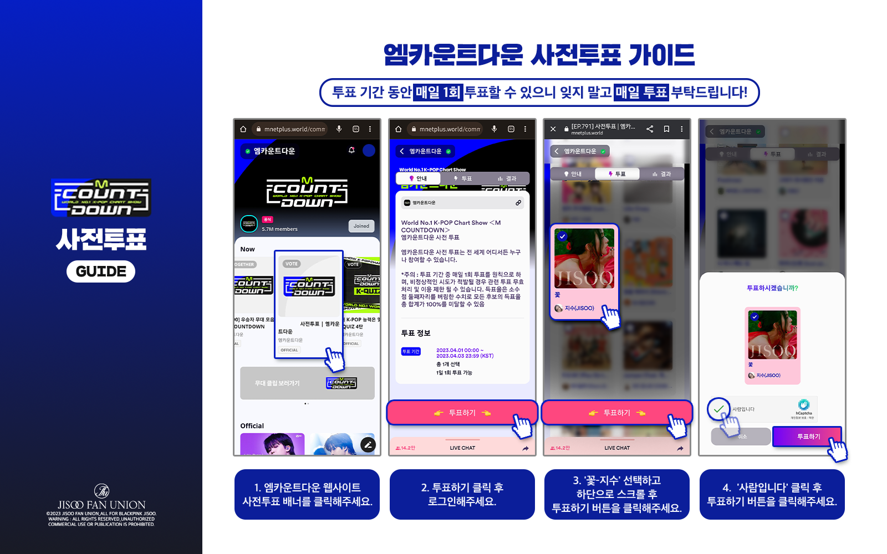
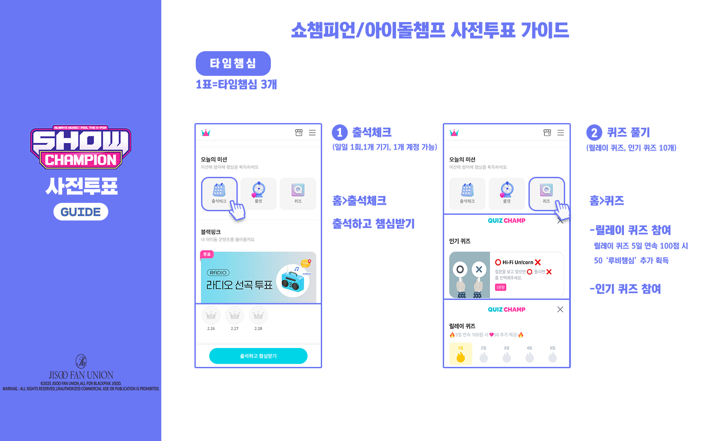
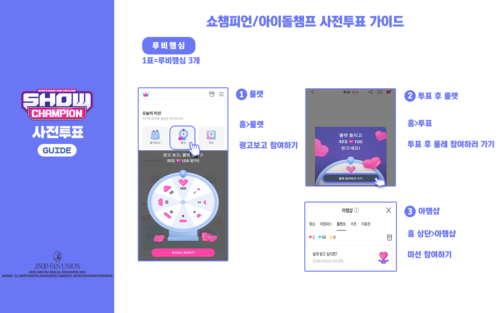

SBS · INKIGAYO
인기가요
사전 투표
매주 월요일 11:55 ~ 금요일 23:59 · 계정당 하루 1회
실시간 투표
생방송 중 진행 · 계정당 최대 5표
핫스테이지
매주 일요일 16:40 ~ 목요일 12:00 · 하루 5회
EVERY VOTE COUNTS
음악방송 사전·실시간 투표 링크와 참여 안내를 모았어요.
일정과 투표 방식은 방송 및 앱 사정에 따라 바뀔 수 있으니 최신 공지를 확인해 주세요.
01 / MUSIC SHOW

매주 월요일 11:55 ~ 금요일 23:59 · 계정당 하루 1회
생방송 중 진행 · 계정당 최대 5표
매주 일요일 16:40 ~ 목요일 12:00 · 하루 5회
매주 화요일 18:00 ~ 목요일 11:00 · 무제한 투표
생방송 중 진행 · 계정당 최대 5표
선정된 시청자 위원만 참여할 수 있어요.

매주 일요일 15:00 ~ 수요일 11:00 · 무제한 투표
매주 토요일 00:00 ~ 월요일 23:00 · 기기당 계정 1개, 하루 5회
생방송 중 진행 · 기기당 계정 1개, 하루 5회
매주 금요일 20:00 ~ 월요일 15:00 · 무제한 투표
위 투표 일정과 횟수는 기존 JFU 안내 자료를 기준으로 옮겼습니다. 컴백 주간·방송 일정 등에 따라 달라질 수 있으니 투표 전 공식 앱에서 확인해 주세요.
02 / WEEKLY SCHEDULE

03 / VOTING APPS
인기가요 사전 투표에 사용되는 앱입니다. 앱에서 인기가요 투표 메뉴와 참여 가능 시간을 확인해 주세요.







